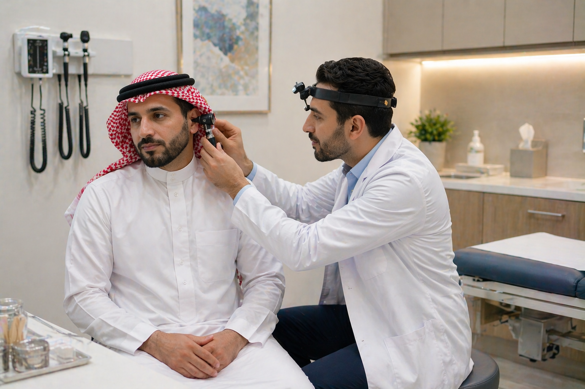
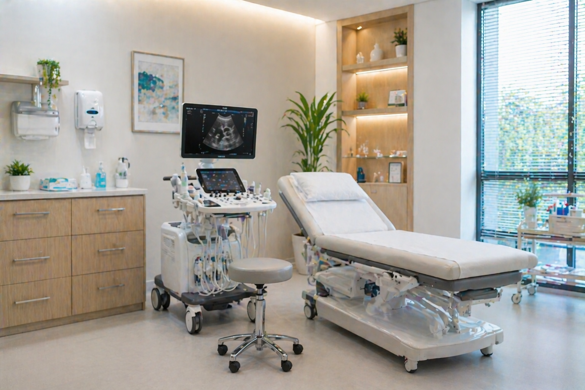
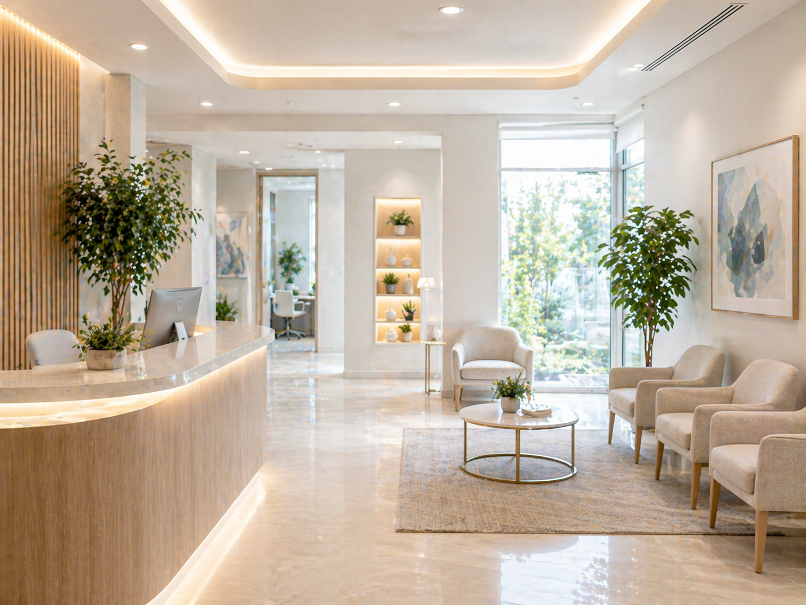
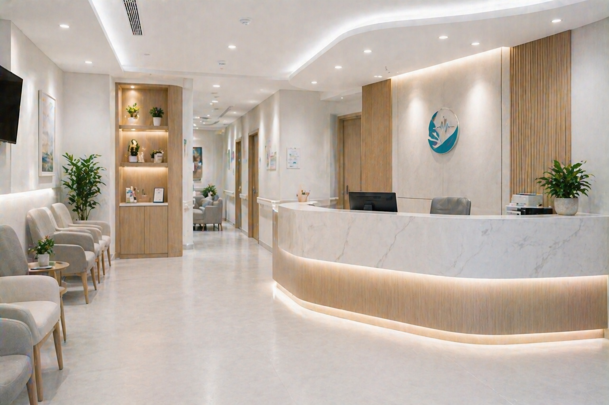
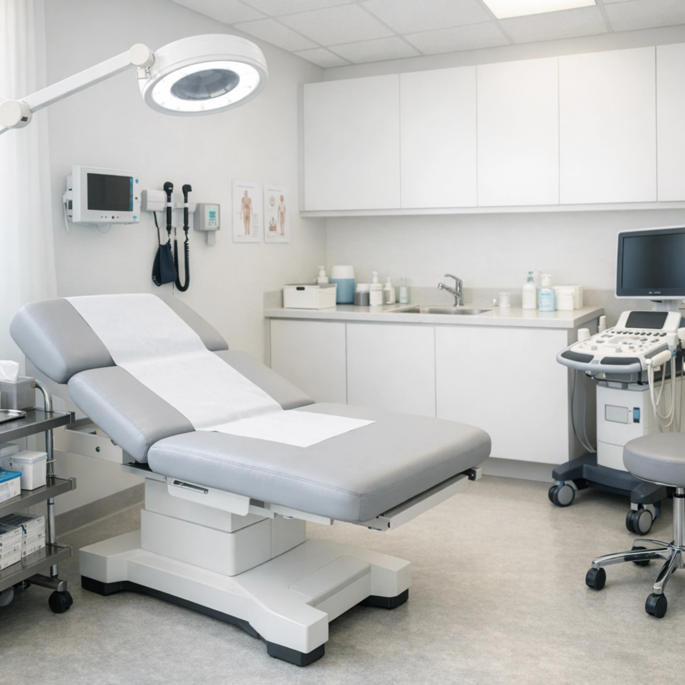

رعاية أوضح • تجربة أهدأ • حضور طبي واثق
حجز سريع
وصول مباشر للحجز والاستفسار
تخصصات متعددة
عرض واضح للخدمات الأساسية
بيئة مطمئنة
واجهة هادئة تناسب النشاط الطبي
واجهة طبية مطمئنة تعكس الثقة من أول نظرة
عوافي قالب حديث لمجمع عيادات أو مركز طبي، مبني ليظهر التخصصات والخدمات والأطباء وأجواء المكان بأسلوب هادئ ومهني، مع وصول سريع للحجز من الجوال.
واجهة مطمئنة
خدمات واضحة
مناسب للجوال
حجز مباشر
أسلوب طبي حديث
التخصصات
قسم يعرّف بالخدمات الطبية بسرعة ووضوح
في المواقع الطبية، الزائر يريد فهم التخصصات بسرعة، لذلك بُني هذا القسم بصور واضحة وعناوين مباشرة ومساحة مريحة للقراءة.

01
الطب العام
استشارات أولية ومتابعات صحية وفحوصات أساسية ضمن بيئة واضحة ومطمئنة.

02
الأسنان
فحوصات وعناية علاجية وتجميلية مع عرض مهني يناسب العيادات الحديثة.
03
الجلدية
خدمات جلدية وتجميلية ضمن هوية هادئة وواضحة تساعد في بناء الثقة.

04
الأطفال
متابعة صحية لطيفة وواجهة مناسبة للعائلة ضمن قالب مريح وقابل للتخصيص.



عن العيادة
هوية طبية عربية
ألوان مريحة ولمسات مؤسسية تعطي وضوحًا وهدوءًا.
قابل للتوسع
يمكن إضافة صفحات الأطباء والخدمات والأسعار والحجز لاحقًا.
صور حقيقية تدعم الثقة
بنية القالب تعتمد على الصور الطبية المنظمة أكثر من الزخرفة.
بنية بصرية تشبه العيادات الحديثة أكثر من كونها صفحة عامة فقط
صُمم عوافي ليكون أقرب إلى حضور مجمع عيادات حقيقي: استقبال منظم، صور داخلية، خدمات واضحة، مساحة للأطباء، وحجز ظاهر في كل الأماكن المهمة.
الأطباء
قسم واضح لتعزيز الثقة وبناء حضور مهني للطاقم الطبي
حتى إن لم تكن كل الصور النهائية جاهزة الآن، فإن الهيكل هنا يعطي شعورًا حقيقيًا لمجمع طبي منظم وقابل للتطوير.
د. أحمد
الطب العاممتابعة واستشارات أولية بأسلوب واضح ومريح، مع طابع مهني حديث.
د. سارة
الجلديةقسم مرتب لتعريف الزائر بالطبيب والتخصص مع مساحة مناسبة لإضافة الخبرات لاحقًا.
طاقم طبي متكامل
قسم مرن للأطباء والتخصصات
يمكن زيادة عدد البطاقات أو تحويل هذا القسم إلى سلايدر أطباء أو صفحة مستقلة لاحقًا، بدون الحاجة لإعادة بناء القالب من جديد.
اطلب تخصيص القالب
لماذا عوافي
قالب طبي مختلف عن القوالب السابقة في التوزيع والطابع البصري
هذه النسخة مبنية من الصفر بطابع طبي أوضح، وتعتمد على الصور والبطاقات والفراغات المريحة بدل الأسلوب المتقارب مع القوالب الأخرى.
الحجز
كلما كان الوصول إلى الحجز أوضح، زادت فرصة تحول الزيارة إلى موعد فعلي
لهذا جعلنا الحجز عنصرًا بارزًا داخل الصفحة بدل أن يكون خيارًا ثانويًا أو مخفيًا.
الأسئلة الشائعة
أسئلة تساعد الزائر على فهم الموقع والخدمات بسرعة
هل هذا القالب مناسب لمجمع عيادات أم لعيادة واحدة؟
مناسب للاثنين، ويمكن تخصيص النصوص والخدمات والتخصصات حسب النشاط الحقيقي بسهولة.
هل يمكن إضافة صفحات مستقلة لاحقًا؟
نعم، القالب مبني بطريقة تسمح بإضافة صفحات الأطباء والخدمات والحجز والأقسام الفرعية لاحقًا.
هل يمكن استبدال الصور الحالية بصور حقيقية للعيادة؟
نعم، وهذا هو الاستخدام الأمثل، لأن بنية القالب أصلًا تعتمد على الصور لدعم الثقة والانطباع المهني.
جاهز للانطلاق
ابدأ بعرض طبي أنيق يليق باسم عوافي ويعكس الثقة من أول زيارة
هذه النسخة مبنية من الصفر لتكون أقرب إلى هوية طبية واضحة ومقنعة، مع بنية سهلة التطوير لاحقًا.